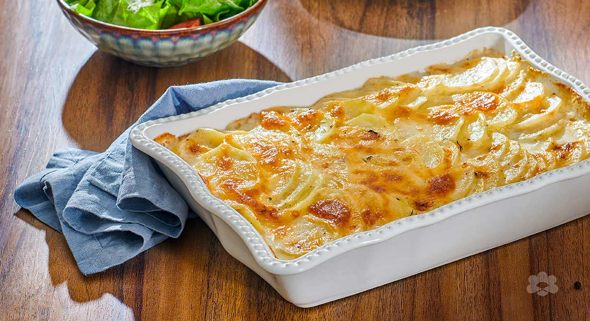

Potato in Oven

Potatos in Oven are great
Ingredients
- Potatos
- Cream
- Cheese
- Garlic
- Salt
- Pepper
- Butter
- Thyme
Steps
- Add cream , garlic , butter to a mixing cup
- Pour it into your sliced potatoes first layer
- Add salt , pepper, thyme
- You have done your first layer! do 3 layers total!
- Bake without cheese (cover it with alaminimum foil)
- Add cheese (Carefull hot!) and bake it for some more time
- Lets eat!
Back to Home